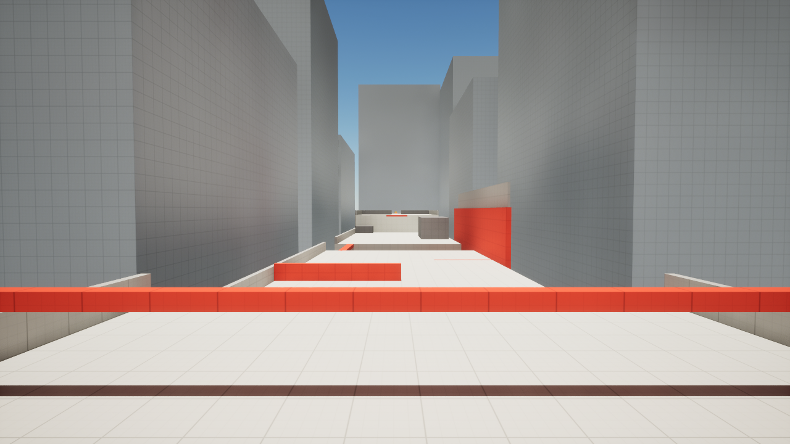
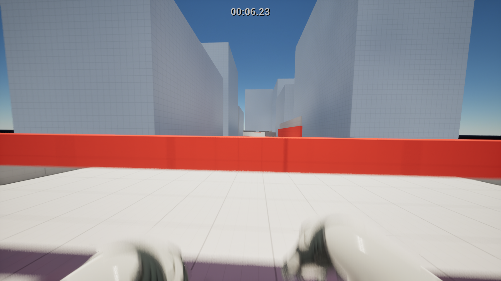

Check the core.
The repository documents bit-identical replays of the Rust reference through C++. Tests compare the exact values, not just whether a move looks close.
Runline / A movement study in progress
A familiar feel,
a different engine.
Bringing Mirror’s Edge-inspired parkour into Unreal with a C++ movement core. The challenge: preserve the rules closely enough that every frame agrees.

The engineering question
A port needs more than a similar-looking jump.
RunlineCore is a function-by-function C++20 port of the Rust movement crate in tnrjns’s faith-runner. It has no Unreal dependency. Sprinting, vaulting, wallruns, ledge grabs, slides, rolls, and turns are evaluated inside the core.
Recorded inputs from the reference are replayed through the port. Position, velocity, movement state, and events are compared frame by frame, so differences can be found before camera effects and animation make them harder to see.
FROM ABOVE
FROM THE SIDE
Billboard wallrun
Eight runs recorded from faith-runner’s own tests across the Rooftops course. RunlineCore replays every one and must match each frame exactly; what you see is the shared path. The live route uses .
From the repository
The repository documents bit-identical replays of the Rust reference through C++. Tests compare the exact values, not just whether a move looks close.
The box-world traces also replay through Unreal’s collision adapter. This checks the boundary between the portable movement rules and the game world.
The movement component steps the core at a fixed rate, with interpolated rendering. Input, collision, camera effects, and animation connect through the Unreal layer.

What’s working & what’s next
The current build has a rooftop course, checkpoints, a time trial, and a body animated by movement state.
Input supports keyboard and gamepad, with camera effects and pause and options menus. The next design step is to test the feel with players and develop a small number of new momentum moves that fit the existing rules.
Those new moves are planned work. This project is still in development; the source includes build instructions.
Credit where it belongs. Movement and course designs are ported from faith-runner by tnrjns, used and adapted with the author’s permission. Mirror’s Edge (DICE / EA) is the design reference. No Mirror’s Edge game files are included. Runline is not affiliated with EA or DICE. See the repository’s full credits.